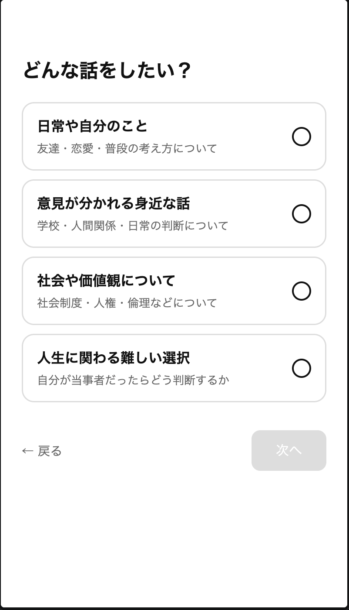
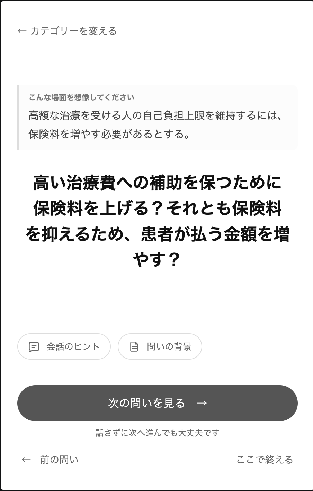

Omoiとは
友達、恋人、家族と、普段はなかなか話さない価値観や社会問題について話すための質問カードです。
- 診断や採点はありません。
- 画面に問いを置き、その場にいる人と話します。
名前の由来は、Omoi（重い・想い・思い）に書いています。
画面で何をするか
話題カテゴリを選ぶと、画面に問いが表示されます。その問いについて、お互いに考えを話します。場面文や「会話のヒント」「問いの背景」は、用意されている問いで確認できます。
- 答えを入力する欄はありません。
- アカウントはありません。
- 回答の保存はありません。
- 会話は、目の前の人とのあいだに残ります。
正しい答えは出さない
質問に、一つの正解へ誘導する仕組みはありません。次のものはありません。
- 採点
- 正解
- 勝敗
説得しない、勝たない
「この人は、こういうふうに考えているんだ」と、お互いの考えを知るためのものです。
- 相手の意見を変えることが目的ではありません。
- 議論で勝つことが目的ではありません。
質問があると話せる
普通の会話の中で突然、「これについてどう思う？」と聞くのは難しいことがあります。
- 質問があると、「次これだって」と切り出せます。
- 「これどう思う？」と、話を始めやすくなります。
恋愛の質問カードから始まった
恋愛や日常の話題なら、質問カードは少なくありません。Omoiも、その使い方から始まっています。
- 二人で画面を見ながら、「これどう思う？」と聞く。やり方は、恋愛の質問カードと近いものです。
- 違うのは、扱う話題です。価値観や社会問題など、普段は切り出しにくい話です。
身近な人とは、重い話をしない
友達と遊んでいるときに、突然「男女の問題についてどう思う？」と聞くことは、ほとんどありません。恋人や家族でも同じです。
- 意見が分かれそうなテーマほど、「空気が悪くなりそう」「わざわざ今話すことではない」と思って、話さないままになることがあります。
- すごく身近な人なのに、その人が社会について何を考えているのかを、ほとんど知らないこともあります。
人は属性では割り切れない
SNSでは、短い投稿や一つの属性だけで判断されやすいことがあります。同じ男性でも、同じ女性でも、同じ年代でも、考え方は一人ひとり違います。
- 同じ結論でも、「なぜそう思うのか」まで聞けば、理由は全く違うかもしれません。
- Omoiは、その理由を話すための質問を置きます。
話しても分かり合えるとは限らない
- 同じ答えにたどり着く必要はありません。
- 話したあとで、意見が違ったままでも構いません。
共感は賛成ではない
ここでの共感は、賛成ではありません。自分の考えを捨てることでもありません。
- 相手に、その人なりの考えがあること。
- なぜそう思うのかを、少し知ることです。
対立を、共感に。
違う考えのまま、相手の思いを知ることです。
恋愛向けは多い、社会問題向けは少ない
- 恋愛や日常の話題向けの質問カードは、すでに多くあります。
- 社会問題や意見が分かれやすい価値観について、身近な人と話すものは多くありません。
深さは選べる
話す内容は、その日の状態に合わせて4つの話題カテゴリから選べます。表示カテゴリとデータのLevelの関係は、話題カテゴリとLevelに書いています。
4つの話題カテゴリ
- 日常や自分のこと：友達・恋愛・普段の考え方について。
- 意見が分かれる身近な話：学校・人間関係・日常の判断について。
- 社会や価値観について：社会制度・人権・倫理などについて。
- 人生に関わる難しい選択：自分が当事者だったらどう判断するか。
話す長さはその場で決める
問いを一つずつ読み進め、終えたいときに「ここで終える」を選べます。事前に問題数を選ぶ必要はありません。


話したくなければ飛ばせる
話したくない質問は、「次の問いを見る」から答えずに進めます。
- すること
- 答えずに次の問いへ進めます。
- 理由は入力しません。
- 「カテゴリーを変える」から話題を選び直せます。
- 「前の問い」で戻ったり、「ここで終える」で終了したりできます。
- しないこと
- 飛ばしたことを採点しません。
- あとで答える義務は残りません。
- セッション全体を失敗にしません。
開いてもらわなければ始まらない
- 質問を用意することはできます。
- 「この話をしてみよう」と思ってもらうところまでを、Omoiが作れるとは限りません。
- 特に重い話は、「今日はわざわざ話したくない」と思う人もいるでしょう。
一つの会話でいい
Omoiを公開すれば対話が一気に増える、とは考えていません。
- 友達と少し深い話をするとき
- 恋人の考え方をもっと知りたいとき
- 家族と普段は話さないことを話してみようと思ったとき
その瞬間に一つの質問があれば、一つの会話が始まることがあります。
VIUK-Lightとの関係
OmoiはVIUK-Lightのプロジェクトです。名前のLightと同じ向きから生まれています。
- Lightは、暗闇を照らす名前です。
- 少しのことでも誰かの役に立つ、その積み重ねです。
- 大きな社会問題を一度に解決することはできません。